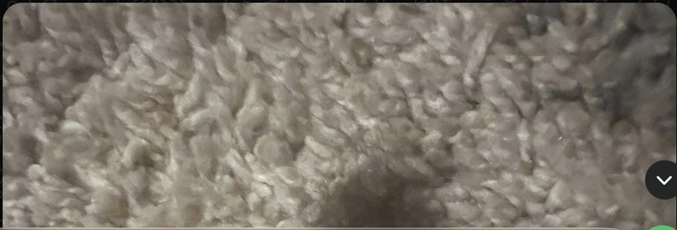
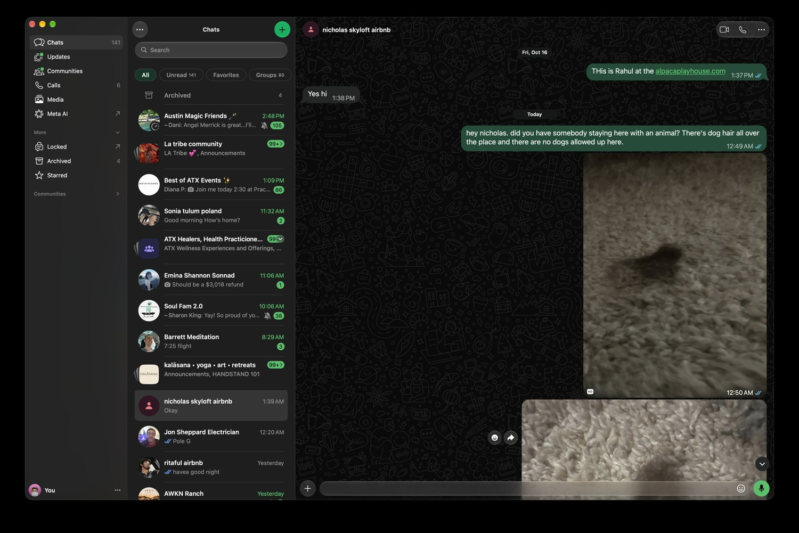
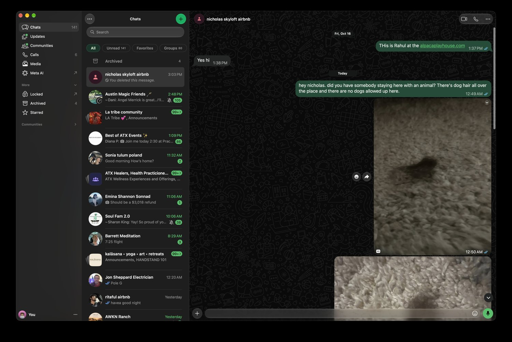

Version 1.0 — November 15, 2026, 3:45 PM CST (America/Chicago) • Alpaca Playhouse — case file for Airbnb Support
Reservation: HMTQER2C8D • Listing: Sky Loft Suite @ the Alpaca Playhouse, Cedar Creek, Texas (Airbnb listing 51367635) • Stay: October 17 – November 14, 2026, 28 nights • Host / listing owner: Rahul Sonnad • Airbnb message thread: conversation 2700468050
This is a simple case. Five points, each proved in the sections below with the guest’s own words:
What the host is asking Airbnb to do is listed as a short checklist in §8. The filing deadline that matters is November 28, 2026 — 14 days after the November 14 checkout. An unfinished Resolution Center draft already exists: reference CLSF-06730944. Nothing has been submitted yet.
| Item | Verified fact |
|---|---|
| Guest who booked | Nicholas Killgore |
| Confirmation code | HMTQER2C8D |
| Booking date | Friday, October 16, 2026 |
| Check-in / checkout | Check-in Sat, Oct 17, 2026, 2:00 PM • Checkout Sat, Nov 14, 2026, 11:00 AM • 28 nights |
| Amount | $1,218.78 total for 28 nights (confirmed card and earnings panel). A special offer of $1,249 was sent first and replaced by the confirmed booking. |
| Guests on the reservation | “Nicholas’s group of 2” — Nicholas (shown as “1 adult”) plus one unnamed “+1”. No other person is named. Mike is not on the reservation. |
| Pet on the reservation | None. No pet, dog, or animal is listed anywhere in the reservation panel, the confirmed card, or the special offer (verified live Nov 15, 2026). |
| Listing pet policy | “No pets” — in the structured house rules, in the public house rules, and in the description (quoted in §3). |
| Person who stayed with the dog | “Mike” — Nicholas’s employee (Nicholas’s own words, WhatsApp, Nov 15). Not a registered guest, never asked about, never approved. |
| Condition found after checkout | Extensive dog hair all over the Sky Loft carpets, on the stairs, in the middle of rooms, and downstairs. Host documented it in person on Nov 15 and photographed it (photos sent to the guest at 12:50 AM, Nov 15). |
| Resolution Center status | Draft only — ref CLSF-06730944, labelled “Finish reimbursement request” / “Damage, missing items, or unexpected cleaning”. No amount entered, nothing submitted or sent to the guest yet (verified live Nov 15, 2026, ~3:40 PM). |
| Deadline | November 28, 2026 — 14 days after the Nov 14 checkout (Airbnb’s rule for involving Support / Host damage protection; see §7). |
| Guest’s last word | Nov 15, 3:28 PM, on Airbnb: “Send me the bill” — after the host’s 3:27 PM message, which is marked “Read by Nicholas”. |
| Review | Host’s review of this guest is still pending (not submitted as of this file). |
Privacy note for this public copy: door codes, Wi-Fi password, and phone numbers that appear inside the message threads have been replaced with [redacted]. They are not relevant to this case. Airbnb Support can read the full, unredacted threads directly in conversation 2700468050 and in the host’s WhatsApp thread with the guest.
The reservation was confirmed on Airbnb on October 16, 2026 at 1:31 PM:
Airbnb (system), Oct 16, 1:31 PM — “Confirmed” / “Sky Loft Suite @ the Alpaca Playhouse” / “Oct 17 – Nov 14, 2026 · $1,218.78 for 2 guests”
That is the whole authorised party: 2 guests. Airbnb’s own rule for this is in the Ground Rules for Guests (quoted in §7): guests must respect the approved number of overnight guests and ask the host if they are unsure about additional visitors. Nicholas never asked anyone if Mike could stay. The host stated this to him directly, and Nicholas did not dispute it:
Rahul (Airbnb), Nov 15, 2:55 PM — “and keep in mind that you did not ever ask anyone if mike could stay. You just sent him to the house. He was not anyone who was known or has an airbnb profile.”
Rahul (WhatsApp), Nov 15, 1:38 AM — “but in general you can't have random people staying in the room who are not listed on the airbnb guest list.” → Nicholas, 1:38 AM — “Yes sir”
Three separate places — so there is no room for “I didn’t know”:
“Pet Policy — For this accommodation - no pets unfortunately due to carpet all over the floor.”
Sky Loft listing 51367635, “Other things to note” section — verified live Nov 15, 2026, identical in the guest view and in the host editor.
Standard house rules for listing 51367635 include: “No pets” (alongside “Up to 5 overnight guests”, “No smoking”, quiet hours 11:00 PM – 7:00 AM).
Verified live Nov 15, 2026 on the guest house-rules page and in the host editor, where the structured pet setting is also “No pets”.
Rahul (Airbnb), Oct 16, 2026, 9:40 PM — “generally we don't want more dogs, because they create tension with other animals, and the guy in Master Pasture is afraid of dogs. But we have strict rule for two rooms in the house: 1) Skyloft and 2) Master pasture against dogs. There is another trailer opening up on 10/22 it will be listed on airbnb and hour friend could get that with a friendly dog that is not left by itself.”
The host did not just say no — he offered an alternative place (a trailer opening Oct 22) where the friend could stay with the dog. Nicholas’s reply shows he understood the rule and accepted it:
Nicholas (Airbnb), Oct 16, 2026, 11:01 PM — “Okay they dog is never left by itself. Always with us and super friendly. I will tell him”
“I will tell him” is Nicholas accepting that the dog’s owner — “him” — had to be told. That same pattern repeats after checkout (§4): Nicholas says he did tell Mike, and Mike promised not to bring the dog.
Step by step, from the correspondence itself:
All media on this page is hosted in this case folder on the Alpaca Playhouse site, with a direct link under each item, so Support can open or download the file itself.



Additional photos / video: the host took further photos and video of the dog hair throughout the house on the afternoon of Nov 15, 2026 (after the messages above). Those files had not been uploaded to this page as of Version 1.0 — this section will be updated with direct links when they are added, and the same files will be attached to the Resolution Center request. Nothing in the case above depends on them: the two photos here were already sent to the guest during the stay dispute itself.
Host’s in-person documentation (Nov 15): the host walked the Sky Loft and found hair all over the carpets and on the stairs, in multiple spots including the middle of rooms, and downstairs as well — exactly as he described to the guest at 12:49 AM (WhatsApp) and 1:43 AM (Airbnb). He also noted that a returning long-term tenant is allergic, which is part of why the no-dogs rule for this carpeted unit is strict.
All times are local house time (America/Chicago). Airbnb = Airbnb thread 2700468050. WhatsApp = WhatsApp thread “nicholas skyloft airbnb”.
| When | What happened |
|---|---|
| Oct 16, 2026, 1:25–1:31 PM Airbnb | Booking made and confirmed: $1,218.78, 2 guests, Oct 17 – Nov 14. Host sends practical details and identifies the on-site person: “Jon lives onsite. He's the house engineer” — a helper for guests, not presented as a host or as anyone who can approve guests or animals. |
| Oct 16, 9:40 PM Airbnb | Host states the no-dogs rule for the Sky Loft in writing, before check-in, and offers a trailer opening Oct 22 for the friend with the dog. Full quote in §3.3. |
| Oct 16, 11:01 PM Airbnb | Nicholas accepts: “Okay they dog is never left by itself. Always with us and super friendly. I will tell him” |
| Oct 17, 6:02 AM Airbnb | Check-in day. Host asks if the staff cleaner may put linens away; Nicholas agrees. (Last Airbnb messages until Nov 15 — the stay itself produced no Airbnb messages.) |
| Oct 17 – Nov 14 | The stay. At some point during it — the exact night is not stated in any message — Mike, Nicholas’s employee, stayed at the house with a dog. Mike was not on the reservation and was never approved. |
| Nov 14, 11:00 AM | Checkout. The 14-day clock for a Resolution Center / Host damage protection request starts here. Deadline: Nov 28, 2026. |
| Nov 15, 12:49 AM WhatsApp | Host, having found the condition of the room: “hey nicholas. did you have somebody staying here with an animal? There's dog hair all over the place and there are no dogs allowed up here.” |
| Nov 15, 12:50 AM WhatsApp | Host sends the two carpet photos (§5, Photos 1–2). |
| Nov 15, 12:52–12:53 AM WhatsApp | Nicholas: “It will be cleaned. The dog was never supposed to be there”. Asked who is cleaning and when: “Mike and in the morning”. Asked who Mike is: “And employee”. Nicholas also asks the host to text his other phone [number redacted]. |
| Nov 15, 1:10–1:39 AM WhatsApp | Host chases (“did you get message?”, “?”, “are you there?”). Nicholas: “Checking”, then “Yes, but didn't recieve anything. He will clean. I honestly had no idea”. Host: the room is occupied now; “There was a very specific no dogs upstairs rule that we discussed, via chat.” Nicholas: “Exactly and i told him that. He specifficly told me he would not have the dog”. Host: hair is also on the stairs and downstairs; random people not on the guest list cannot stay in the room. Nicholas: “Yes sir”. Host: “I'm switching to Airbnb messaging.” Nicholas: “Okay”. |
| Nov 15, 1:43 AM Airbnb | Host puts it on the Airbnb record: dog hair all over the room upstairs, on the stairs, and downstairs; the room is not in proper shape for occupants; his own person will clean tomorrow because he does not want untrusted people on the property; Mike, the guest Nicholas invited, brought a dog, lied to Nicholas about it, and was not on the guest list, “which is against airbnb policies to have random people staying at the house without being listed.” |
| Nov 15, 1:46 AM Airbnb | Nicholas promises to pay: “Please tell me what the cleaning fee is, and I will make sure that you are compensated for that. I apologize so much for that” [two emoji in the original]. |
| Nov 15, 1:55 AM Airbnb | Host: “ok, it's all over the downstairs also. I'll talk to my cleaning person tomorrow.” — No amount is named by either side anywhere in the thread, because the cleaner had not yet been consulted. |
| Nov 15, 10:43 AM Airbnb | Nicholas relays Mike’s new claim: “Mike is stating that he got permission from John to have the dog there. I just found this information out from Mike when I informed him of this.” (Message shown as Edited; read by co-host Sonia.) |
| Nov 15, 2:50 PM Airbnb | Host: Jon “is not in charge of rental matters, He is not a host or co-host. He is a tenant who works helping guests… But I had specifically told you there were no dogs especially upstairs.” Nicholas: “Well again, it had nothing to do with that.” Host: “I don't understand what had nothing to do with what?” |
| Nov 15, 2:52 PM Airbnb | Nicholas: “This conversation is over, I refuse to argue with you. He asked for permission and got it.” / “Have a nice day!” Host: “not from someone who can give it.” Nicholas: “Not my problem”. Host: “I will send you the bill are you going to pay?” Nicholas: “That’s a conversation you need to have with John.” |
| Nov 15, 2:53–2:55 PM Airbnb | Host: this is a conversation he will have with Airbnb, because Jon is not a host and has no authority to let anyone stay; asks Nicholas to say whether he will pay “for all the dog problems or not”; repeats that Nicholas never asked if Mike could stay and just sent him to the house. |
| Nov 15, 3:14 PM Airbnb | Host: if Nicholas does not answer about payment, he will assume Nicholas is not going to cover it and will make an Airbnb resolution request. |
| Nov 15, 3:27 PM Airbnb | Host: “Please confirm if you are going to pay for cleaning as indicated earlier for your unauthorized guest and the problems his animal created.” — marked “Read by Nicholas”. |
| Nov 15, 3:28 PM Airbnb | Nicholas: “Send me the bill” — the last message in the thread (verified twice, §9). The bill has not yet been sent: the cleaning cost is being itemised for the Resolution Center request (draft CLSF-06730944). |
Short quotes only, each with its source link, so the representative can open the exact Airbnb page. Wording checked on Airbnb’s site on November 15, 2026.
No cleaning amount is stated in this file because no amount has yet been given to the guest: the host’s cleaner is itemising it, and the amount, estimate/receipt, and the Nov 15 afternoon photos/video will be entered in the Resolution Center request itself, within the Nov 28 deadline.
Spelling, punctuation, and typos are as written. [redacted] replaces door codes, the Wi-Fi password, and phone numbers in this public copy only. One Airbnb message (Oct 16, 1:36 PM, about WhatsApp numbers) displayed two slightly different wordings across two live reads on Nov 15; it is irrelevant to this case and is shown with both readings where it appears.
Verified live on Nov 15, 2026: read in full at ~3:32–3:40 PM, then reloaded and re-read at ~3:40 PM. Count (47 + 3) and last message (Nicholas, 3:28 PM, “Send me the bill”) were identical on both reads. The thread begins Oct 16 — there are no Oct 15 messages in it.
Rahul Oct 16, 1:25 PM — “ok, I'll cancel this and just do the original request again and I'll accept and give you moderate cancelation policy if you need to leave. if you ever had to leave early, you'd only pay for the nights you stayed, plus one night and 50% of the remaining nights.”
Airbnb (system) Oct 16, 1:25 PM — “Special offer withdrawn”
Rahul Oct 16, 1:26 PM — “ok, go ahead and book again the original dates.”
Airbnb (system) Oct 16, 1:29 PM — “Special offer sent $1,249 for 2 guests” / “Oct 17 – Nov 14, 2026 · 28 nights” / “Sky Loft Suite @ the Alpaca Playhouse”
Rahul Oct 16, 1:29 PM — “ok, that's the same as original for a few bucks less plus one day early checkin”
Nicholas Oct 16, 1:30 PM — “Okay”
Nicholas Oct 16, 1:30 PM — “I will accept it now. Okay?”
Rahul Oct 16, 1:30 PM — “yes good”
Airbnb (system) Oct 16, 1:31 PM — “Confirmed” / “Sky Loft Suite @ the Alpaca Playhouse” / “Oct 17 – Nov 14, 2026 · $1,218.78 for 2 guests” / “Moderate cancellation policy” (Note: the reservation panel separately shows “Cancellation policy Strict Long Term”. Both are quoted as displayed; the difference does not affect this case.)
Rahul Oct 16, 1:31 PM — “door code is [redacted] check” / “that is for the skyloft door. Front door is open.” / “the unit is up the stairs behind the kitchen.”
Rahul Oct 16, 1:32 PM — “wifi is [redacted] You can use Spotify to play music to "skyloft sound" (make sure Spotify can find network devices)” / “do you use whatsapp? I can put you on the resident chat group.”
Rahul Oct 16, 1:34 PM — “I'm in warsaw, poland so it's 7 hours later here, but if you have any questions, Jon lives onsite. He's the house engineer, and can be reached at: [redacted]”
Nicholas Oct 16, 1:35 PM — “Yes I have two American numbers one and a Mexican line [redacted]” / “Ok! Thank you” / “Both please”
Rahul Oct 16, 1:35–1:36 PM — “the fridge int he skyloft may not be on. it's behind the bar. There is a fridge in the Garage and another behind the sauna you can feel free to use.” / “is one of those whatsapp enabled?” / “when I say not on, I mean you need to turn the dial so that the freezer is on.”
Nicholas Oct 16, 1:36 PM — [wording differed across the two live reads: first read “In both! And I mean the Mexican line is not a phone. That's a SIM in one of my American phones”; second read “In both! If you can add both, it's perfect.” — about WhatsApp numbers only; irrelevant to this case]
Rahul Oct 16, 1:58–2:02 PM — [photo attachment, “A picture”] and trailer-parking messages: best place for the trailer, parking on grass when wet, talk to Jon about alternatives, rain forecast 0% chance.
Rahul Oct 16, 9:40 PM — “generally we don't want more dogs, because they create tension with other animals, and the guy in Master Pasture is afraid of dogs. But we have strict rule for two rooms in the house: 1) Skyloft and 2) Master pasture against dogs. There is another trailer opening up on 10/22 it will be listed on airbnb and hour friend could get that with a friendly dog that is not left by itself.”
Nicholas Oct 16, 11:01 PM — “Okay they dog is never left by itself. Always with us and super friendly. I will tell him”
Rahul Oct 17, 6:02 AM — “Nicholas, our staff cleaner wants to come in to put some linens and such away later today. Would this be ok?”
Nicholas Oct 17, 6:02 AM — “This is fine, I will be gone at work but I have no issue with that. Thank you”
Rahul Nov 15, 1:43 AM — “Nicholas, so as mentioned, there is dog hair all over the room upstairs and on the stairs, and downstairs. This is unfortunate, because the room is now not in the proper shape for occupants. I'm going to have my person clean tomorrow because I don't want people who can't be trusted on the property, and it sounds like Mike the guest you invited brought a dog, and he lied to you about bringing this dog. he also was not on the guest list which is against airbnb policies to have random people staying at the house without being listed.”
Nicholas Nov 15, 1:46 AM — “Please tell me what the cleaning fee is, and I will make sure that you are compensated for that. I apologize so much for that [two emoji in original]”
Rahul Nov 15, 1:55 AM — “ok, it's all over the downstairs also. I'll talk to my cleaning person tomorrow.”
Nicholas Nov 15, 10:43 AM — “Mike is stating that he got permission from John to have the dog there. I just found this information out from Mike when I informed him of this.” (Shown as Edited; read by co-host Sonia.)
Rahul Nov 15, 2:50 PM — “Well Jon, is not in charge of rental matters, He is not a host or co-host. He is a tenant who works helping guests. He is not the kind of person who easily says not to anything. But I had specifically told you there were no dogs especially upstairs.”
Nicholas Nov 15, 2:50 PM — “Well again, it had nothing to do with that.”
Rahul Nov 15, 2:51 PM — “I don't understand what had nothing to do with what?”
Nicholas Nov 15, 2:52 PM — “This conversation is over, I refuse to argue with you. He asked for permission and got it.”
Nicholas Nov 15, 2:52 PM — “Have a nice day!”
Rahul Nov 15, 2:52 PM — “not from someone who can give it.”
Nicholas Nov 15, 2:52 PM — “Not my problem”
Rahul Nov 15, 2:52 PM — “I will send you the bill are you going to pay?”
Nicholas Nov 15, 2:52 PM — “That’s a conversation you need to have with John.”
Rahul Nov 15, 2:53 PM — “.well, it's actually a conversation I will have wiht airbnb, because Jon is not a host and has no authority to let anyone stay.”
Rahul Nov 15, 2:54 PM — “but let me know if you are going to pay for all the dog problems or not.”
Rahul Nov 15, 2:55 PM — “and keep in mind that you did not ever ask anyone if mike could stay. You just sent him to the house. He was not anyone who was known or has an airbnb profile.”
Rahul Nov 15, 3:14 PM — “if you don't answer about the payment tI will assume you are not going to cover this and will make an airbnb resolution request.”
Rahul Nov 15, 3:27 PM — “Please confirm if you are going to pay for cleaning as indicated earlier for your unauthorized guest and the problems his animal created.” (Marked “Read by Nicholas”.)
Nicholas Nov 15, 3:28 PM — “Send me the bill” (Last message in the thread.)
Read from the host’s own WhatsApp on Nov 15, 2026. Times below are local (America/Chicago); the two screenshots in §5 show the start of the Nov 15 exchange.
Rahul Oct 16, 1:37 PM — “THis is Rahul at the alpacaplayhouse.com”
Nicholas Oct 16, 1:38 PM — “Yes hi”
Rahul Nov 15, 12:49 AM — “hey nicholas. did you have somebody staying here with an animal? There's dog hair all over the place and there are no dogs allowed up here.”
Rahul Nov 15, 12:50 AM — [two photos — §5, Photos 1–2]
Nicholas Nov 15, 12:52 AM — “It will be cleaned. The dog was never supposed to be there”
Rahul Nov 15, 12:52 AM — “who is cleaning and when?”
Nicholas Nov 15, 12:53 AM — “Mike and in the morning”
Rahul Nov 15, 12:53 AM — “who is mike?”
Nicholas Nov 15, 12:53 AM — “And employee”
Nicholas Nov 15, 12:54 AM — “Text me on my other phone. [redacted]”
Rahul Nov 15, 1:10 AM — “did you get message?”
Nicholas Nov 15, 1:14 AM — “Checking”
Rahul Nov 15, 1:22 AM — “?”
Rahul Nov 15, 1:33 AM — “are you there?”
Nicholas Nov 15, 1:34 AM — “Yes, but didn't recieve anything. He will clean. I honestly had no idea”
Rahul Nov 15, 1:35 AM — “but the room is occupied now. There was a very specific no dogs upstairs rule that we discussed, via chat.”
Nicholas Nov 15, 1:36 AM — “Exactly and i told him that. He specifficly told me he would not have the dog”
Rahul Nov 15, 1:37 AM — “the dog must have been super long haired because there is hair all over the stairs and downstairs also.”
Rahul Nov 15, 1:38 AM — “but in general you can't have random people staying in the room who are not listed on the airbnb guest list.”
Nicholas Nov 15, 1:38 AM — “Yes sir”
Rahul Nov 15, 1:38 AM — “I'm switching to Airbnb messaging.”
Nicholas Nov 15, 1:39 AM — “Okay”
End of case file — Version 1.0, November 15, 2026. Prepared for Airbnb Support for reservation HMTQER2C8D. Host: Rahul Sonnad, Alpaca Playhouse, Cedar Creek, Texas.